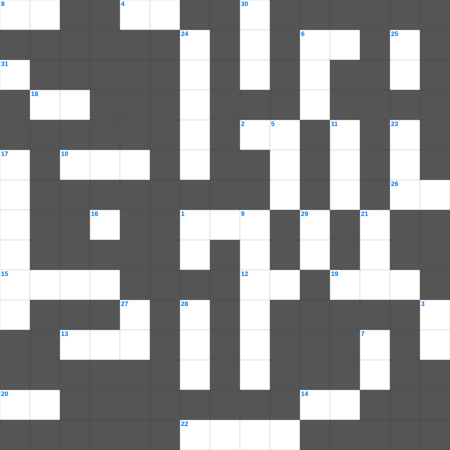

성경 속 동물 이야기
오늘은 성경의 주요 내용을 담은 성경 무료 성경퀴즈를 준비했습니다. 총 35개의 힌트가 있으며, 주일학교 교재나 성경공부 자료로 활용하기 좋습니다. 무료로 즐기는 성경 가로세로 퍼즐을 지금 바로 풀어보세요!

📝 가로 힌트
1. 사자 굴에서도 살아남은 사람
2. 열두 돌을 세운 요단강가 지명
4. 열 처녀 비유에서 준비해야 했던 것
6. 성경 인물 중 가장 장사(힘이 센 사람)는?
8. 좋은 땅에 떨어진 씨앗은 몇 배의 결실?
10. 니고데모와 예수님의 대화 주제
12. 여섯째 날 마지막에 만드신 존재
13. 에덴 동산에서 아담과 하와가 쫓겨난 일
14. 무지개를 통해 주신 하나님의 약속
15. 죽은 나사로를 향해 하신 명령
18. 야곱의 사다리 환상 장소
19. 그물에 가득 찬 각종 이것
20. 예수님의 무덤을 막았던 것
22. 거짓 이것들이 일어나 많은 사람을 미혹함
26. 여호와 이것: 치료하시는 하나님
📝 세로 힌트
1. 바울의 고향
3. 믿음은 바라는 것들의 이것
5. 엘리야가 바알 선지자와 대결한 산
5. 엘리야가 바알 선지자들과 대결한 산
6. 베드로가 하루에 전도하여 세례받은 사람 수
7. 모든 것 위에 믿음의 이것을 가지고
9. 도끼가 물 위에 떠오른 기적
11. 예수님이 매달리신 형틀
16. 온유한 자가 기업으로 받는 것
17. 모세가 호렙산에서 본 신비한 나무
21. 이스라엘이 외칠 때 무너진 성
21. 이스라엘 백성이 요단강을 건너 처음 도착한 성
23. 너희는 여호와를 만날 만한 때에 이것하라
24. 열매 없는 이것나무를 예수님이 저주하심
25. 예수님이 우리 죄를 대신해 죽으신 은혜
27. 하나님을 믿고 죄를 씻어 영생을 얻는 일
28. 성소의 떡상 위에 놓인 12개의 떡
29. 가난한 과부가 드린 두 이것
30. 대제사장의 흉패에 박힌 보석 개수
31. 잃어버린 한 마리 이것을 찾는 목자
🏷️ 키워드
성경 무료 성경퀴즈, 성경, 십자가로세로, 성경퀴즈, 말씀퀴즈, 가로세로퍼즐